现状分析
Current State Analysis对游戏当前 8 个界面逐一截图分析，提炼优势与短板，为后续设计方案提供精准的改造依据。
① 主界面 MAIN MENU
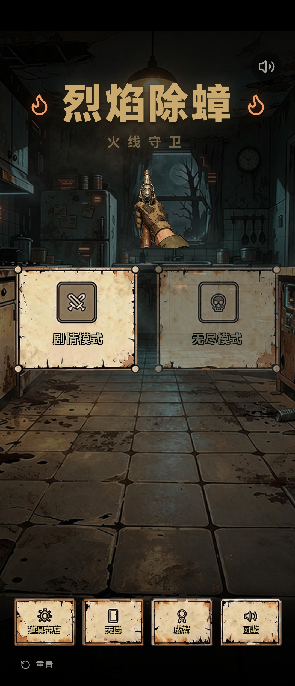
现状：暗色废土厨房背景 + 居中持枪手图 + 双模式按钮 + 底排四功能入口。
② 关卡选择 LEVEL SELECT
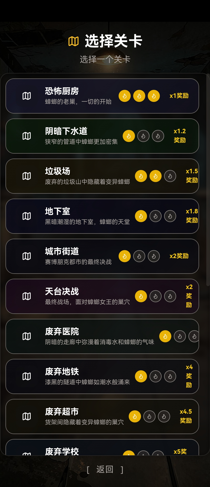
现状：纵向列表 10 关，每关含门图标、名称、描述、星级、奖励倍率。
③ 商店（补给站） SHOP
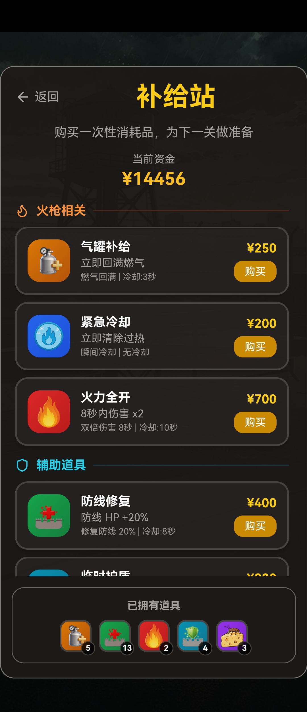
现状：顶部资金 → 分类商品列表（火枪/辅助）→ 底部库存栏。
④ 天赋系统 TALENT
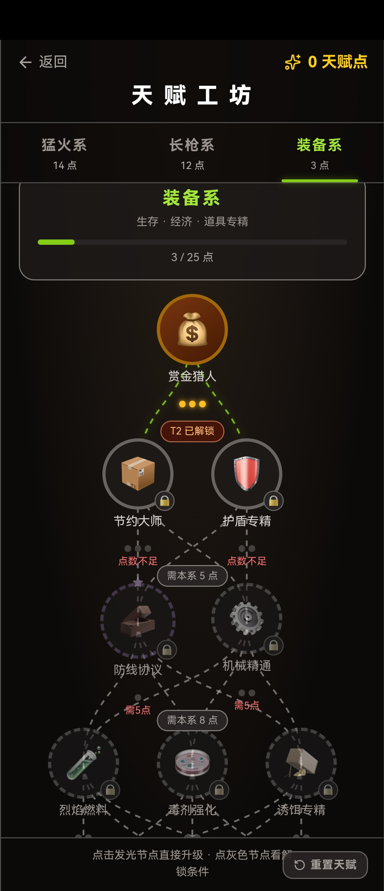
现状：三系 Tab（猛火/长枪/装备）+ 系别信息卡 + 树状节点结构 + 底部重置。
⑤ 加载界面 LOADING
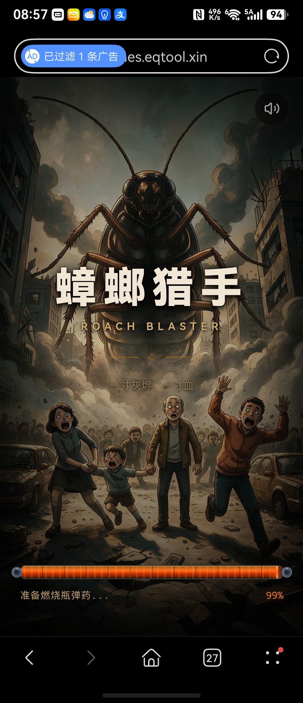
现状：巨型蟑螂 + 恐慌人群 + 标题 + 99% 加载条。
⑥ 成就系统 ACHIEVEMENT
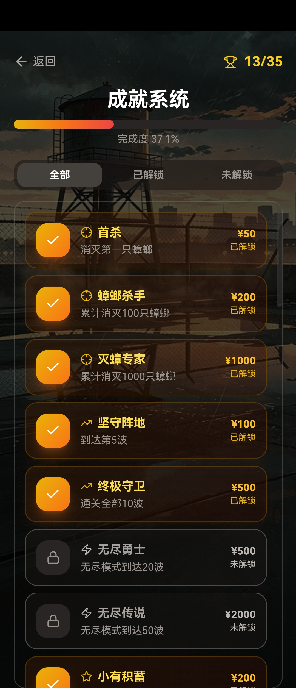
现状：进度条 + 全部/已解锁/未解锁 Tab + 成就列表卡片。
⑦ 战斗 HUD COMBAT HUD
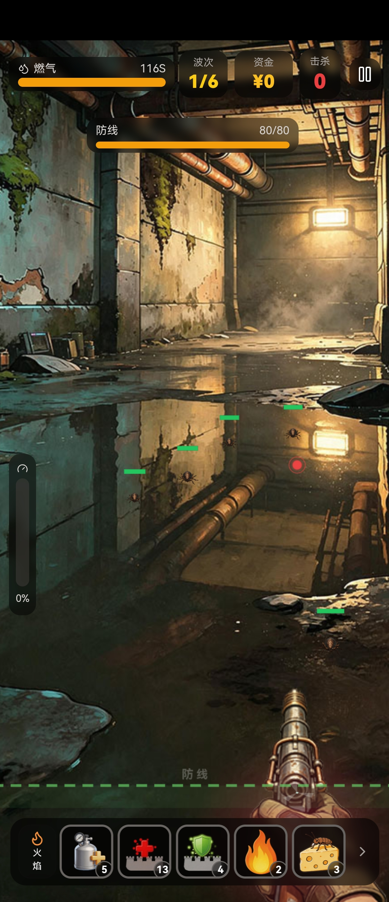
现状：战斗中实时显示血量、弹药、波次信息，底部技能/道具栏。
⑧ 图鉴系统 CODEX
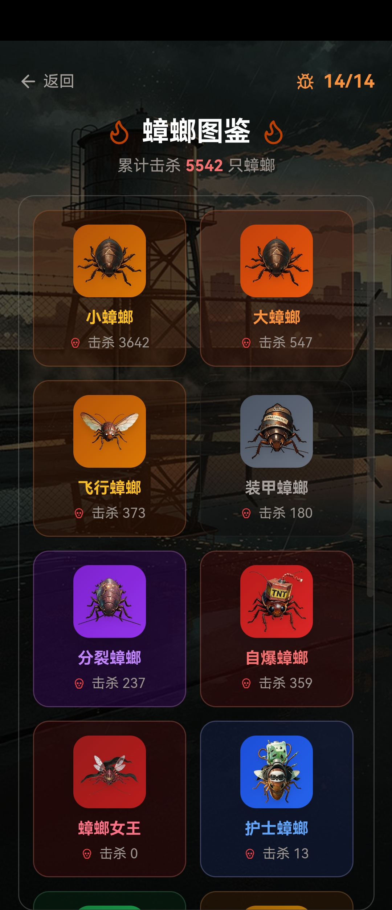
现状：累计击杀统计 + 2 列网格卡片 + 稀有度色分 + 击杀计数。
设计哲学
Design Philosophy确立「Fire Roach Killer」的整体设计方向——不是另起炉灶，而是将现有的废土灭虫气质从背景延伸到界面。
范式定位 PARADIGM POSITIONING
主范式：废土生存系 PRIMARY
游戏核心是在废弃场所中用火焰武器消灭蟑螂——这与辐射、地铁、潜行者、最后生还者共享"文明废墟中拾荒生存"的气质。UI 应呈现受控腐蚀：锈蚀边框、磨损金属、磷光屏幕、胶带修补。每个界面都像是从废墟中捡回来的设备上运行的。
辅范式：复古终端系 SECONDARY
灭虫者的 PDA 设备运行在过时的工业终端上——磷光绿 CRT 扫描线、等宽字体、黑底绿字、机械按钮。这一范式用于成就系统（DOS 乱码装饰）和全局叠层特效（CRT 故障闪烁），在特定事件时触发增强戏剧性。
三大设计支柱 THREE DESIGN PILLARS
① 沉浸优先 DIEGETIC
UI 不是叠加层，而是灭虫者装备的一部分。主界面是 PDA 的开机画面，战斗 HUD 是防毒面具镜片上的投影，商店是补给站的终端机，图鉴是手绘记录本。每个界面都有物理载体。
② 信息清晰 CLARITY
战斗中一切决策所需信息一目了然——参考 Into the Breach 的 8×8 网格信息排布原则。状态栏贴边放置不遮挡核心视野（Dead Cells 模式），数值简洁到极致，每个数字都有语义图标。
③ 受控衰减 PATINA
界面带有物理质感——锈蚀边框、铆钉点缀、磨损划痕、胶带修补——但"受控"意味着磨损是系统性的装饰层，不影响可读性。磨损程度暗示设备等级：越新的界面越干净，越旧的越斑驳。
美术风格方案
Art Style Plan从色彩、字体、质感到特效，定义 Fire Roach Killer 的完整视觉语言系统。
色彩系统 COLOR SYSTEM
主色板 PRIMARY PALETTE
火焰橙为品牌主色（武器/火焰主题），机构黄为强调色（Pip-Boy 遗产），磷光绿为终端色（CRT 数据），警告红为危险色（Boss/濒死）。
系别色彩 FACTION COLORS
天赋三系各自分配独立色彩，在 Tab 高亮、节点连线、系别信息卡中统一使用。
字体系统 TYPOGRAPHY
双字体策略 DUAL TYPEFACE
标题使用粗壮衬线体（火焰/热量的视觉重量感），正文使用无衬线体（可读性），数据/终端使用等宽体（CRT 终端感）。
字号阶梯 SIZE SCALE
| 用途 | 字号 | 字重 | 字体 |
|---|---|---|---|
| H1 页标题 | clamp(40,6.5vw,86)px | 900 | Serif |
| H2 章节标题 | clamp(26,3.4vw,44)px | 900 | Serif |
| H3 卡片标题 | 19px | 700 | Serif |
| 正文 | 13.5px | 300 | Sans |
| 数据/终端 | 11px | 400 | Mono |
| 标签/微标 | 9-10px | 400 | Mono |
质感与材质 TEXTURE & MATERIAL
锈蚀金属 RUST METAL
卡片边框带有锈蚀纹理——不是纯平面色块，而是金属氧化后的渐变。角接处有铆钉点缀（小圆点装饰），暗示工业组装。用于主界面、关卡选择的卡片。
CRT 磷光屏 CRT PHOSPHOR
数据展示区使用CRT 扫描线叠层——磷光余晖效果，暗处仍有微弱发光。等宽字体在磷光绿底色上呈现，模拟旧式终端。用于成就、天赋数据。
手绘磨损 HAND-DRAWN
图鉴系统使用手写涂鸦与胶带做旧——卡片边缘有撕裂感，信息像被用马克笔写在旧纸上，关键处用胶带固定。营造"灭虫者的私人记录本"质感。
视觉特效 VISUAL EFFECTS
全局叠层 GLOBAL OVERLAY
CRT 扫描线全局半透明叠层（opacity:.03），在特定事件触发时增强：Boss 出场闪烁、成就解锁乱码、过热报警红屏。参考 Signalis 的故障条纹作为非全局常驻效果。
动效原则 MOTION RULES
所有过渡动画≤0.3s（即时反馈），避免过度装饰。Hover 仅改变颜色/边框，不做位移。页面切换使用淡入淡出，不做滑动翻转。
UI 布局方案
UI Layout Plan逐一为 8 大界面模块提供详细的布局重构方案——每个模块包含布局线框图、参考游戏映射、改造要点。
① 主界面 MAIN MENU
布局方案 LAYOUT
将主界面重构为灭虫者 PDA 的开机画面。屏幕模拟一台被捡回来的工业 PDA：顶部状态栏（时间/天气/资源）、中央地图式导航、底部功能入口。背景保留废墟厨房但降低亮度，PDA 面板叠加在上。
改造要点 KEY CHANGES
新 UI 设计稿 MOCKUP
PDA 开机画面——顶部状态栏（时间/燃料/弹药/信号），中部「剧情模式 / 无尽模式」机械按钮（锈蚀铆钉 + 磷光绿区分），底排四入口（商店/天赋/成就/图鉴）带数字角标，整体叠加 CRT 扫描线。
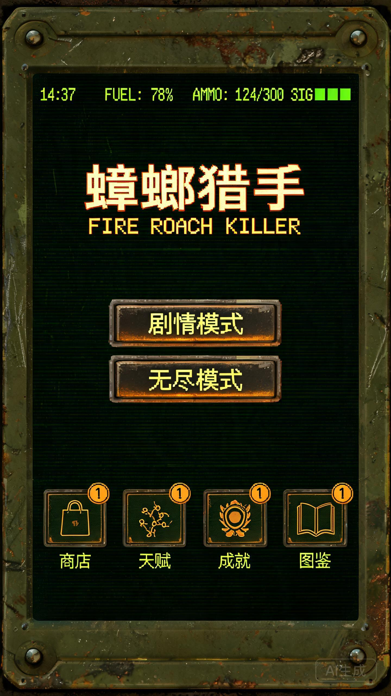
② 关卡选择 LEVEL SELECTION
布局方案 LAYOUT
从纯列表改为分支地图 + 网格卡片混合布局——参考 Slay the Spire 的分支路径导航，但卡片用辐射 Pip-Boy 的网格嵌套边框。已通关关卡亮起路径，未解锁关卡暗显但路径可见。
改造要点 KEY CHANGES
新 UI 设计稿 MOCKUP
分支地图网格——已通关关卡火焰橙路径亮起并显示 3 星评级，未解锁关卡灰显但虚线路径可见，关卡卡片采用辐射式双线嵌套边框 + 角接铆钉。
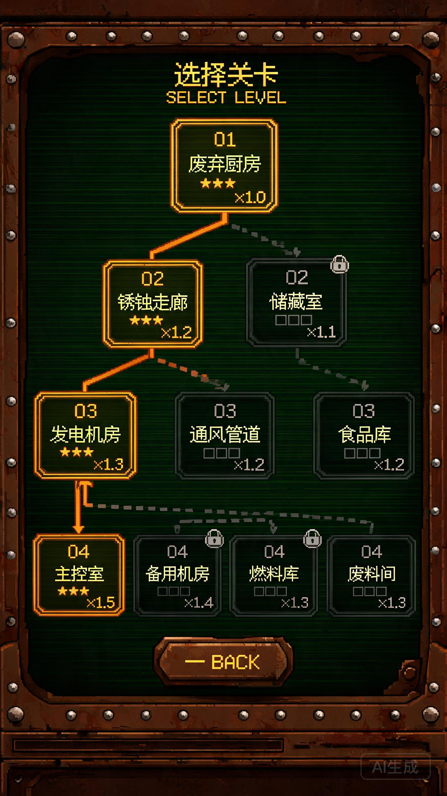
③ 商店界面 SHOP INTERFACE
布局方案 LAYOUT
商店重构为补给站终端机——三栏布局：左栏分类导航（看门狗 ctOS 终端面板风格）、中栏商品列表（Mindustry 工业卡片）、右栏详情/购买（辐射 Pip-Boy 网格边框 + 磷光绿底色）。
改造要点 KEY CHANGES
新 UI 设计稿 MOCKUP
补给站终端机——左栏 ctOS 式分类导航（选中项左缘发光线），中栏工业商品卡片（图标 + 色块冷却标识），右栏磷光绿详情面板 + 全宽火焰橙购买按钮，底部库存栏带数量角标。
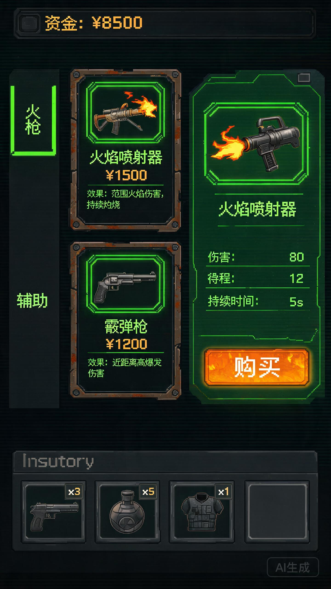
④ 天赋系统 TALENT SYSTEM
布局方案 LAYOUT
天赋树重构为Praxis 改造面板（Deus Ex 概念）——三系 Tab 保持，但节点连线改为全息发光路径，每个节点是带有系别色边框的圆形按钮。已激活节点中心发光，未解锁节点带锁图标且虚线连接。
改造要点 KEY CHANGES
新 UI 设计稿 MOCKUP
Praxis 改造面板——三系 Tab 色彩区分（火焰橙/数据蓝/薄荷绿），圆形发光节点 + 实线路径（已激活亮起），顶部系别信息卡带进度条，天赋点数以磷光绿等宽数字显示。
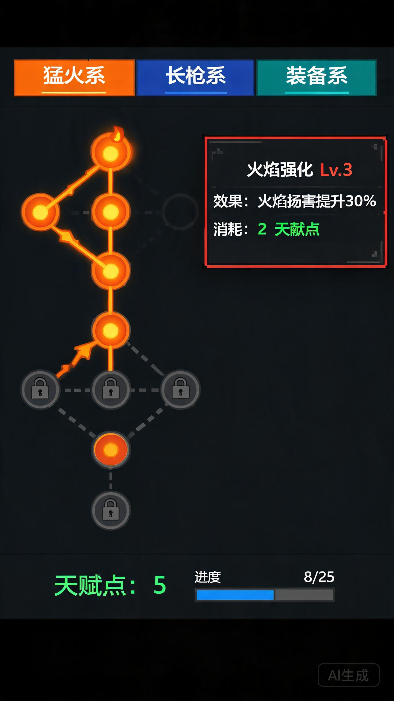
⑤ 加载界面 LOADING SCREEN
布局方案 LAYOUT
加载界面重构为CRT 信号校准画面——保留巨型蟑螂与恐慌人群的背景插画，但叠加 CRT 故障条纹与色差效果。加载条改为 PDA 终端式的分段进度条，加载文案改为世界观内灭虫者的日志摘录。
改造要点 KEY CHANGES
新 UI 设计稿 MOCKUP
CRT 信号校准画面——「蟑螂猎手」标题带色差 Glitch，20 格分段进度条（磷光绿），底部灭虫者日志文案，全屏扫描线 + 雪花噪点叠层。
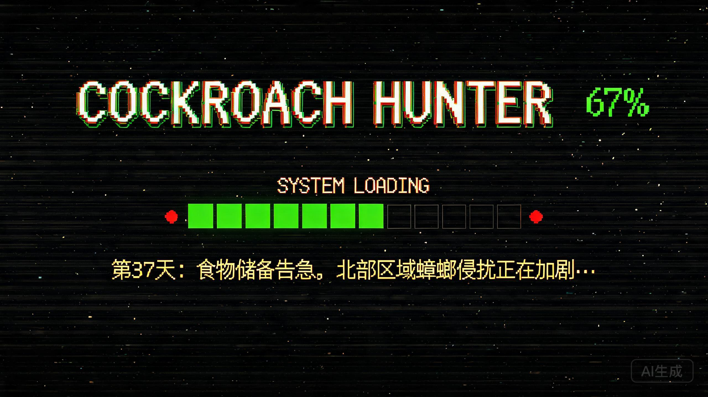
⑥ 成就系统 ACHIEVEMENT SYSTEM
布局方案 LAYOUT
成就系统重构为DOS 终端成就日志——黑底磷光绿等宽字体，已解锁成就以正常文字显示，未解锁成就以乱码/遮罩呈现。卡片边框使用辐射机构黄，成就列表用 Slay the Spire 竖屏数值列表风格。
改造要点 KEY CHANGES
新 UI 设计稿 MOCKUP
DOS 终端成就日志——黑底磷光绿扫描线，已解锁成就机构黄边框 + 正常文字，未解锁成就以 █▓░ 乱码遮罩显示，顶部 35 格分段进度条。
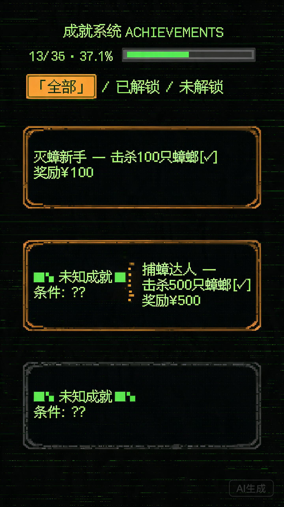
⑦ 战斗 HUD COMBAT HUD
布局方案 LAYOUT
战斗 HUD 采用面具视角 diegetic HUD——所有信息投射在防毒面具的圆弧镜片内。顶部贴边状态栏（Dead Cells 模式），底部技能栏发光（赛博朋克全息），网格化敌人信息（Into the Breach），红色警告色用于濒死/Boss（Superhot）。
改造要点 KEY CHANGES
新 UI 设计稿 MOCKUP
面具视角 diegetic HUD——四角弧形遮罩模拟防毒面具镜片，顶部贴边状态栏（HP + 燃料 + 弹药 + 波次），底部 5 个全息发光技能按钮（火焰橙边框），整体 CRT 扫描线叠层。
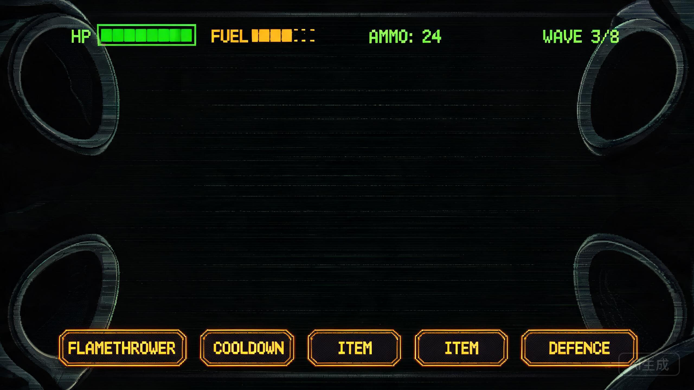
⑧ 图鉴系统 CODEX / BESTIARY
布局方案 LAYOUT
图鉴重构为灭虫者的私人记录本——网格/列表双视图切换（Slay the Spire 模式）。网格视图用手绘磨损卡片（最后生还者胶带做旧），列表视图用 Deus Ex 数据面板。点击进入详情页——Observer 式 3D 全息扫描展示。
改造要点 KEY CHANGES
新 UI 设计稿 MOCKUP
灭虫者私人记录本——网格视图用手绘磨损卡片 + 胶带固定角，列表视图用数据面板式行 + 条形图，未遭遇敌人显示剪影 + UNKNOWN，详情页含属性表 + 弱点 + 推荐武器。
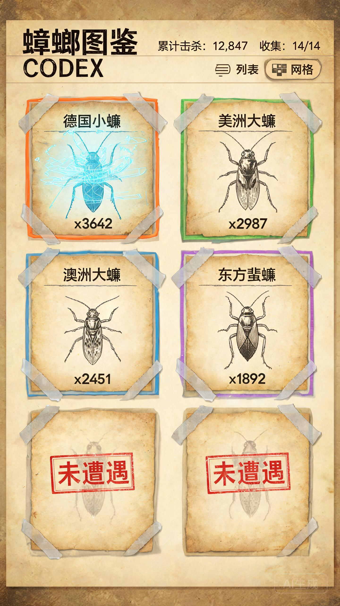
界面模块改造总览 SUMMARY MATRIX
| 模块 | 当前问题 | 改造方向 | 参考游戏 |
|---|---|---|---|
| ① 主界面 | 通用按钮质感，图标重复 | PDA 开机画面 + 机械按钮 + 蟑螂图标 | STALKER · Alien Isolation |
| ② 关卡选择 | 纯列表单调，无路径感 | 分支地图网格 + 嵌套边框 + 详情弹窗 | Fallout · Slay the Spire · Mindustry |
| ③ 商店界面 | 卡片无质感，按钮不醒目 | 三栏终端 + 辐射网格边框 + 火焰橙购买按钮 | Fallout · Watch Dogs · Mindustry |
| ④ 天赋系统 | 节点连线简陋，动效缺失 | 圆形发光节点 + 实线路径 + 脉冲激活动效 | Deus Ex · Dead Cells · Slay the Spire |
| ⑤ 加载界面 | 加载条简单，文案脱节 | CRT 故障叠层 + 分段进度条 + 日志文案 | Signalis · Cyberpunk · Pony Island |
| ⑥ 成就系统 | 对比度不足，图标不统一 | DOS 终端底 + 乱码遮罩 + 逐字解码动效 | Pony Island · Fallout · Slay the Spire |
| ⑦ 战斗 HUD | 缺乏沉浸感，信息散乱 | 面具圆弧遮罩 + 贴边状态栏 + 全息技能栏 | Metro · Cyberpunk · Superhot · ITB · Dead Cells |
| ⑧ 图鉴系统 | 信息密度低，无详情页 | 手绘磨损卡片 + 双视图切换 + 全息扫描详情 | TLOU · Deus Ex · Observer · Slay the Spire |
设计令牌
Design Tokens将设计方案转化为可执行的 CSS 变量与组件规范——开发者可直接复制使用。
CSS 变量 CSS VARIABLES
间距与圆角 SPACING & RADIUS
间距阶梯 SPACING SCALE
| 令牌 | 值 | 用途 |
|---|---|---|
| xs | 4px | 图标内间距 |
| sm | 8px | 卡片内元素间距 |
| md | 12px | 卡片间间距 |
| lg | 18px | 网格 gap |
| xl | 26px | 卡片内 padding |
| 2xl | 38px | 章节间距 |
| 3xl | 110px | section margin-top |
圆角与边框 RADIUS & BORDER
| 令牌 | 值 | 用途 |
|---|---|---|
| r-sm | 2px | 标签/徽章 |
| r-md | 4px | 图片/输入框 |
| r-lg | 6px | 卡片/面板 |
| b-width | 1px | 标准边框 |
| b-accent | 2px | 高亮边框 |
| b-nested | 1px+1px | 嵌套边框(辐射) |